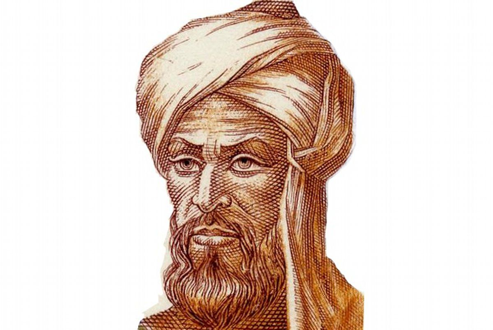

Muhammad ibn Mūsā Al-Khwârizmî est un mathématicien, géographe et astronome arabe à l’origine de plusieurs ouvrages scientifiques, dont le « Livre de l’addition et de la soustraction d’après le calcul indien » paru en 830. Ce dernier a permit la diffusion du système décimal d’Inde, et à introduire différentes opérations mathématiques dont la multiplication, la division et l’extraction des racines.
Il écrit aussi entre 813 et 833 un autre ouvrage mathématiques intitulé « Abrégé du calcul par la restauration et la comparaison », demandé par le Calife, servant à la gestion de problèmes liés aux terres, aux financiers, etc. Dans sa première partie, il étudie des équations du premier et du second degré par la géométrie et complexifie l’algèbre avec des nombres inconnus, irrationnels, et des expressions composées d’autres nombres. Dans sa seconde partie, il défini des fonctions pour résoudre les problématiques financières. Il engendra plusieurs noms mathématiques, dont certains encore utiliser aujourd’hui, comme « algèbre » provenant du terme « al-jabr », et « algorithme » provenant d’une traduction latine de son propre nom.
La page wikipédia de Al-Khwarizmi
Le Livre de l’addition et de la soustraction d’après le calcul indien